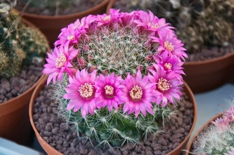

Маммиллярия
Один из самых многочисленных родов кактусов. Отличается небольшими размерами и красивым цветением.

Эхинопсис
Известен своими крупными эффектными цветами. Очень вынослив и подходит для начинающих.

Эпифиллум
Лесной кактус с плоскими стеблями. Цветет крупными яркими цветами различных оттенков.

Шлюмбергера
Также известен как "Декабрист". Цветет зимой, создавая праздничное настроение.

Гимнокалициум
Отличается шаровидной формой и разнообразием окраски. Цветет с раннего возраста.

Лофофора
Также известен как "Пейот". Имеет уникальный внешний вид и требует особых условий содержания.